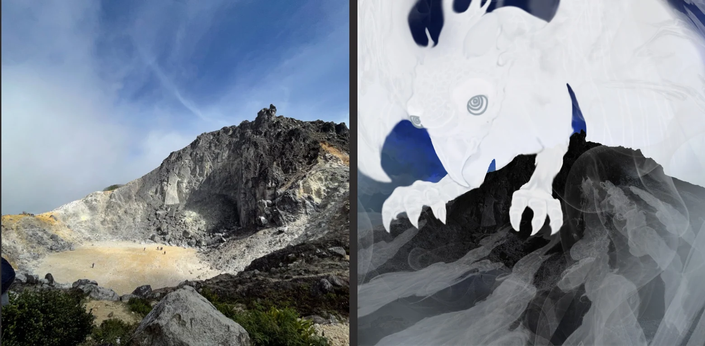
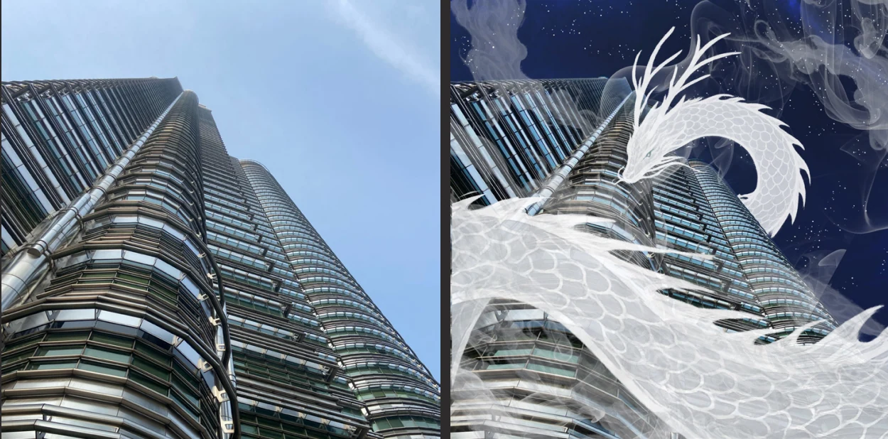
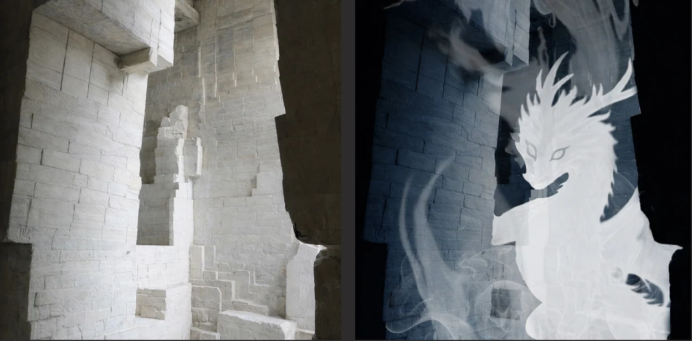
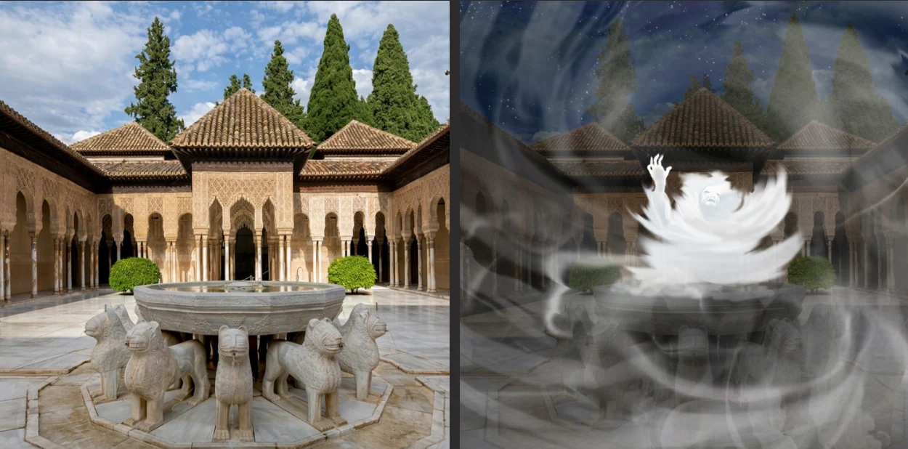

Spirits
Diptyques représentant des lieux et leurs légendes.

Ce que l’on voit n’est peut-être qu’une partie de ce qui existe.
À travers des diptyques mêlant photographie, dessin et montage photo, je fais dialoguer le monde physique avec les récits invisibles qui l’habitent. Chaque esprit est lié à l’histoire et au folklore du lieu photographié, comme une mémoire enfouie qui refait surface.


